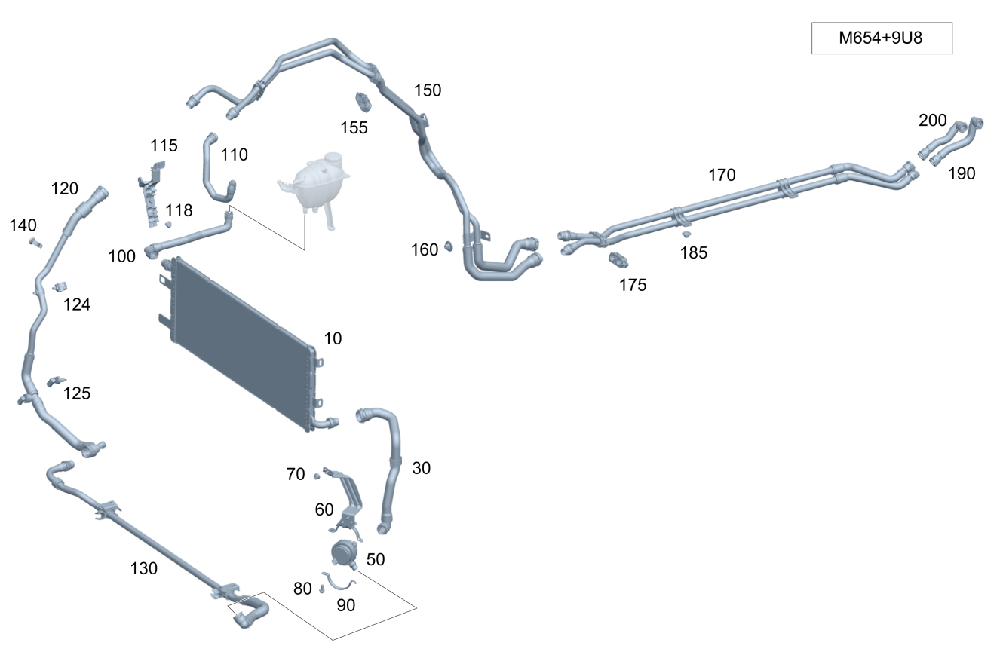

| № | Артикул | Название | Кол. | Примечание |
|---|---|---|---|---|
| 10 | A 167 500 04 00 | Жидкостный радиатор (KUEHLMITTELKUEHLER) | 1 | Система охлаждения АКБ |
| 30 | A 167 501 13 00 | Шланг системы охлаждения (KUEHLMITTELSCHLAUCH) | 1 | От насоса к радиатору слева |
| 30 | A 167 501 65 05 | Шланг системы охлаждения (KUEHLMITTELSCHLAUCH) | 1 | От насоса к радиатору слева |
| 50 | A 000 500 35 00 | COOLANT PUMP (KUEHLMITTELPUMPE) | 1 | Радиатор низкотемпературного контура |
| 50 | A 000 500 53 01 | Насос системы охлаждения (KUEHLMITTELPUMPE) | 1 | Радиатор низкотемпературного контура |
| 60 | A 167 501 13 01 | Держатель (HALTER) | 1 | Крепление насоса |
| 70 | N 000000 008272 | Гайка (MUTTER) | 2 | Крепление кронштейна для насоса; M6 |
| 80 | N 910143 006000 | Винт с 6-гр. глвк (SECHSRUNDSCHRAUBE) | 1 | Крепление кронштейна для насоса; M6X12 |
| 90 | A 213 501 10 20 | Держатель (HALTER) | 1 | Насос охлаждающей жидкости |
| 100 | A 167 501 04 03 | Трубопровод охлаждения (KUEHLMITTELLEITUNG) | 1 | От радиатора к расширительному бачку и разъёму |
| 110 | A 167 501 62 03 | Трубопровод охлаждения (KUEHLMITTELLEITUNG) | 1 | Разъем к разъему |
| 115 | A 167 501 83 02 | Держатель (HALTER) | 1 | Крепление трубопроводов |
| 118 | A 000 991 93 40 | Распорная заклепка (SPREIZNIET) | 1 | Крепление скобы |
| 120 | A 167 501 80 03 | Трубопровод охлаждения (KUEHLMITTELLEITUNG) | 1 | Разъем к разъему |
| 120 | A 167 501 80 03 | Трубопровод охлаждения (KUEHLMITTELLEITUNG) | 1 | Разъем к разъему |
| 124 | A 004 995 23 77 | - Крепеж (трубо)провода (LEITUNGSBEFESTIGER) | 1 | Крепление трубопроводов |
| 125 | A 000 905 61 02 | - Датчик температуры (TEMPERATURSENSOR) | 1 | К хомуту |
| 130 | A 167 500 50 03 | Шланг системы охлаждения (KUEHLMITTELSCHLAUCH) | 1 | От насоса системы охлаждения к разъёму |
| 130 | A 167 500 49 02 | Трубопровод охлаждения (KUEHLMITTELLEITUNG) | 1 | От насоса системы охлаждения к разъёму |
| 140 | A 212 476 13 36 | Держатель (HALTER) | 1 | Крепление трубопровода системы охлаждения |
| 150 | A 167 501 94 03 | Трубопровод охлаждения (KUEHLMITTELLEITUNG) | 1 | Разъем к разъему |
| 155 | A 000 995 91 00 | - Крепеж (трубо)провода (LEITUNGSBEFESTIGER) | 2 | Крепление трубопроводов |
| 160 | A 000 990 99 18 | Пластмассовая гайка откр. (KUNSTSTOFFMUTTER OFFEN) | 2 | Крепление трубопроводов |
| 170 | A 167 501 70 02 | Шланг системы охлаждения (KUEHLMITTELSCHLAUCH) | 1 | Разъем к разъему |
| 170 | A 167 500 58 03 | Шланг системы охлаждения (KUEHLMITTELSCHLAUCH) | 1 | Разъем к разъему |
| 175 | A 000 995 91 00 | - Крепеж (трубо)провода (LEITUNGSBEFESTIGER) | 1 | Крепление трубопроводов |
| 185 | A 000 990 28 62 | Пластмассовая гайка (KUNSTSTOFFMUTTER) | 2 | Крепление шланга системы охлаждения |
| 185 | A 000 990 99 18 | Пластмассовая гайка откр. (KUNSTSTOFFMUTTER OFFEN) | 2 | Крепление шланга системы охлаждения |
| 190 | A 167 501 36 00 | Шланг системы охлаждения (KUEHLMITTELSCHLAUCH) | 1 | Подводящий трубопровод |
| 200 | A 167 501 20 00 | Шланг системы охлаждения (KUEHLMITTELSCHLAUCH) | 1 | Трубопровод рециркуляции ОГ |
| 220 | A 167 500 10 04 | Шланг системы охлаждения (KUEHLMITTELSCHLAUCH) | 1 | |
| 230 | A 167 500 11 04 | Шланг системы охлаждения (KUEHLMITTELSCHLAUCH) | 1 | |
| 240 | A 167 500 63 03 | Шланг системы охлаждения (KUEHLMITTELSCHLAUCH) | 1 | |
| 245 | A 167 500 65 03 | Шланг системы охлаждения (KUEHLMITTELSCHLAUCH) | 1 | |
| 250 | N 000000 008272 | Гайка (MUTTER) | 2 | Держатель к держателю; M6 |
| 255 | N 000000 008296 | ГАЙКА КОМБИНИРОВАННАЯ (KOMBIMUTTER) | 2 | Крепление держателя; M6 |
| 260 | A 167 501 76 05 | Держатель (HALTER) | 1 | |
| 265 | A 167 501 77 05 | Держатель (HALTER) | 1 | |
| 265 | A 167 501 07 06 | Держатель (HALTER) | 1 | |
| 265 | A 167 501 07 06 | Держатель (HALTER) | 1 | |
| 270 | A 167 504 40 00 | Держатель (HALTER) | 1 | |
| 275 | A 000 506 15 00 | Регулирующий клапан (REGELVENTIL) | 1 | |
| 280 | A 000 990 99 18 | Пластмассовая гайка откр. (KUNSTSTOFFMUTTER OFFEN) | 2 | Крепление держателя |
| 285 | N 000000 003648 | Винт с 6-гр. глвк (SECHSRUNDSCHRAUBE) | 2 | M6X25 |
| 290 | A 167 501 58 06 | Держатель | 1 | |
| 290 | A 167 501 58 06 | Держатель | 1 | |
| 295 | A 167 500 56 03 | Держатель | 1 | |
| 295 | A 167 500 56 03 | Держатель | 1 | |
| 295 | A 167 500 56 03 | Держатель | 1 | |
| 295 | A 167 500 56 03 | Держатель | 1 | |
| 300 | A 167 500 04 00 | Жидкостный радиатор (KUEHLMITTELKUEHLER) | 1 | Система охлаждения АКБ |
| 310 | A 167 501 96 00 | Шланг системы охлаждения (KUEHLMITTELSCHLAUCH) | 1 | От радиатора (левая сторона) к переключающему клапану |
| 320 | A 167 501 43 03 | Шланг подачи ОЖ (KUEHLMITTEL-FUELLSCHLAUCH) | 1 | Бачок к радиатору справа и водяному насосу |
| 350 | A 000 500 56 00 | COOLANT PUMP (KUEHLMITTELPUMPE) | 1 | Радиатор низкотемпературного контура |
| 360 | A 167 501 21 01 | Держатель (HALTER) | 1 | Крепление насоса |
| 370 | N 000000 008272 | Гайка (MUTTER) | 2 | Крепление скобы; M6 |
| 370 | N 000000 008272 | Гайка (MUTTER) | 2 | Крепление кронштейна для насоса; M6 |
| 380 | A 251 501 08 20 | Держатель (HALTER) | 1 | Крепление насоса |
| 390 | N 910143 006000 | Винт с 6-гр. глвк (SECHSRUNDSCHRAUBE) | 1 | Крепление скобы M6X12; M6X12 |
| 390 | N 910143 006000 | Винт с 6-гр. глвк (SECHSRUNDSCHRAUBE) | 1 | Крепление кронштейна для насоса; M6X12 |
| 400 | A 167 500 67 01 | Трубопровод охлаждения (KUEHLMITTELLEITUNG) | 1 | Насос к разъему |
| 420 | A 167 501 60 03 | Шланг системы охлаждения (KUEHLMITTELSCHLAUCH) | 1 | Радиатор справа |
| 430 | A 000 990 43 62 | Пластмассовая гайка (KUNSTSTOFFMUTTER) | 1 | Крепление трубопроводов |
| 450 | A 167 500 68 01 | Трубопровод охлаждения (KUEHLMITTELLEITUNG) | 1 | Колесная арка |
| 450 | A 167 500 11 02 | Трубопровод охлаждения (KUEHLMITTELLEITUNG) | 1 | Колесная арка |
| 450 | A 167 500 11 02 | Трубопровод охлаждения (KUEHLMITTELLEITUNG) | 1 | Колесная арка |
| 455 | A 000 995 91 00 | - Крепеж (трубо)провода (LEITUNGSBEFESTIGER) | 3 | Крепление трубопроводов |
| 460 | A 167 500 70 01 | Трубопровод охлаждения (KUEHLMITTELLEITUNG) | 1 | Днище спереди справа |
| 460 | A 167 500 13 02 | Трубопровод охлаждения (KUEHLMITTELLEITUNG) | 1 | Днище спереди справа |
| 460 | A 167 500 13 02 | Трубопровод охлаждения (KUEHLMITTELLEITUNG) | 1 | Днище спереди справа |
| 465 | A 000 995 91 00 | - Крепеж (трубо)провода (LEITUNGSBEFESTIGER) | 1 | Крепление трубопроводов |
| 470 | A 000 990 28 62 | Пластмассовая гайка (KUNSTSTOFFMUTTER) | 2 | Электрический провод на основном днище |
| 470 | A 000 990 99 18 | Пластмассовая гайка откр. (KUNSTSTOFFMUTTER OFFEN) | 2 | Электрический провод на основном днище |
| 480 | A 167 501 24 04 | Держатель (HALTER) | 1 | Крепление трубопроводов |
| 480 | A 167 501 24 04 | Держатель (HALTER) | 1 | Крепление трубопроводов |
| 490 | A 000 990 28 62 | Пластмассовая гайка (KUNSTSTOFFMUTTER) | 3 | Крепление скобы |
| 490 | A 000 990 28 62 | Пластмассовая гайка (KUNSTSTOFFMUTTER) | 3 | Крепление скобы |
| 490 | A 000 990 99 18 | Пластмассовая гайка откр. (KUNSTSTOFFMUTTER OFFEN) | 3 | Крепление скобы |
| 540 | A 167 501 83 02 | Держатель (HALTER) | 1 | Крепление трубопроводов |
| 545 | A 000 991 93 40 | Распорная заклепка (SPREIZNIET) | 1 | Крепление скобы |
| 700 | A 167 501 03 03 | Трубопровод охлаждения (KUEHLMITTELLEITUNG) | 1 | Днище |
| 705 | A 222 504 43 40 | - Держатель (HALTER) | 3 | Крепление трубопроводов |
| 710 | A 167 501 75 03 | Трубопровод охлаждения (KUEHLMITTELLEITUNG) | 1 | Циркуляционный контур охлаждения АКБ |
| 720 | A 167 501 81 03 | Держатель (HALTER) | 1 | Трубопровод к днищу |
| 720 | A 167 501 22 04 | Держатель (HALTER) | 1 | Трубопровод к днищу |
| 725 | N 000000 008272 | Гайка (MUTTER) | 2 | Крепление скобы; M6 |
| 730 | A 167 501 74 03 | Трубопровод охлаждения (KUEHLMITTELLEITUNG) | 1 | |
| 735 | A 000 905 61 02 | - Датчик температуры (TEMPERATURSENSOR) | 1 | |
| 740 | A 000 995 91 00 | - Крепеж (трубо)провода (LEITUNGSBEFESTIGER) | 2 | |
| 750 | A 167 500 18 02 | Трубопровод охлаждения (KUEHLMITTELLEITUNG) | 1 | От разъема к переключающему клапану |
| 750 | A 167 500 42 03 | Шланг системы охлаждения (KUEHLMITTELSCHLAUCH) | 1 | От разъема к переключающему клапану |
| 760 | A 167 501 25 04 | Шланг системы охлаждения (KUEHLMITTELSCHLAUCH) | 1 | От разъема к переключающему клапану |
| 770 | A 000 506 13 00 | Переключающий клапан (UMSCHALTVENTIL) | 1 | |
| 770 | A 000 506 13 00 | Переключающий клапан (UMSCHALTVENTIL) | 1 | |
| 770 | A 000 506 15 00 | Регулирующий клапан (REGELVENTIL) | 1 | |
| 770 | A 000 506 15 00 | Регулирующий клапан (REGELVENTIL) | 1 | |
| 770 | A 000 506 15 00 | Регулирующий клапан (REGELVENTIL) | 1 | |
| 780 | A 167 501 23 04 | Держатель (HALTER) | 1 | Крепление переключающего клапана |
| 785 | N 000000 004658 | Винт с 6-гр. глвк (SECHSRUNDSCHRAUBE) | 2 | Крепление переключающего клапана; M6X25 |
| 790 | A 000 990 28 62 | Пластмассовая гайка (KUNSTSTOFFMUTTER) | 2 | Крепление держателя переключающего клапана |
| 790 | A 000 990 99 18 | Пластмассовая гайка откр. (KUNSTSTOFFMUTTER OFFEN) | 2 | Крепление держателя переключающего клапана |
| 800 | A 167 500 19 02 | Трубопровод охлаждения (KUEHLMITTELLEITUNG) | 1 | Переключающий клапан к аккумуляторной батарее |
| 800 | A 167 500 58 02 | Трубопровод охлаждения (KUEHLMITTELLEITUNG) | 1 | Переключающий клапан к аккумуляторной батарее |
| 800 | A 167 500 58 02 | Трубопровод охлаждения (KUEHLMITTELLEITUNG) | 1 | Переключающий клапан к аккумуляторной батарее |
| 2010 | A 167 500 04 00 | Жидкостный радиатор (KUEHLMITTELKUEHLER) | 1 | Система охлаждения АКБ |
| 2020 | A 167 501 96 00 | Шланг системы охлаждения (KUEHLMITTELSCHLAUCH) | 1 | От радиатора (левая сторона) к переключающему клапану |
| 2055 | A 000 506 14 00 | Переключающий клапан (UMSCHALTVENTIL) | 1 | Радиатор, слева |
| 2060 | A 000 906 13 13 | - Исполнительный элемент (AKTUATOR) | 1 | |
| 2065 | N 000000 003648 | Винт с 6-гр. глвк (SECHSRUNDSCHRAUBE) | 2 | Крепление переключающего клапана; M6X25 |
| 2080 | A 167 500 76 01 | Трубопровод охлаждения (KUEHLMITTELLEITUNG) | 1 | От переключающего клапана к водяному насосу |
| 2085 | A 000 905 61 02 | - Датчик температуры (TEMPERATURSENSOR) | 1 | |
| 2100 | A 167 501 45 03 | Шланг системы охлаждения (KUEHLMITTELSCHLAUCH) | 1 | От переключающего клапана к испарителю |
| 2115 | A 000 500 35 00 | COOLANT PUMP (KUEHLMITTELPUMPE) | 1 | Радиатор низкотемпературного контура |
| 2130 | A 167 501 13 01 | Держатель (HALTER) | 1 | Крепление насоса |
| 2135 | N 000000 008272 | Гайка (MUTTER) | 2 | Крепление кронштейна для насоса; M6 |
| 2155 | A 213 501 10 20 | Держатель (HALTER) | 1 | Крепление насоса |
| 2165 | A 167 501 05 01 | Шланг системы охлаждения (KUEHLMITTELSCHLAUCH) | 1 | Насос к разъему |
| 2180 | A 167 501 94 00 | Шланг системы охлаждения (KUEHLMITTELSCHLAUCH) | 1 | Радиатор, слева |
| 2180 | A 167 500 14 02 | Трубопровод охлаждения (KUEHLMITTELLEITUNG) | 1 | Радиатор, слева |
| 2180 | A 167 500 14 02 | Трубопровод охлаждения (KUEHLMITTELLEITUNG) | 1 | Радиатор, слева |
| 2195 | A 167 501 80 02 | Держатель (HALTER) | 1 | Крепление трубопроводов |
| 2205 | N 000000 008272 | Гайка (MUTTER) | 1 | Крепление держателя; M6 |
| 2220 | A 167 501 95 00 | Шланг системы охлаждения (KUEHLMITTELSCHLAUCH) | 1 | Для электродвигателя |
| 2230 | A 222 504 43 40 | - Держатель (HALTER) | 3 | Крепление трубопроводов |
| 2240 | A 000 990 28 62 | Пластмассовая гайка (KUNSTSTOFFMUTTER) | 2 | Крепление держателя |
| 2240 | A 000 990 99 18 | Пластмассовая гайка откр. (KUNSTSTOFFMUTTER OFFEN) | 2 | Крепление держателя |
| 2275 | A 167 501 51 01 | Шланг системы охлаждения (KUEHLMITTELSCHLAUCH) | 1 | От разъема к охладителю наддувочного воздуха |
| 2285 | N 910143 006000 | Винт с 6-гр. глвк (SECHSRUNDSCHRAUBE) | 3 | Крепление трубопровода; M6X12 |
| 2295 | A 004 994 17 45 | SPRING NUT (FEDERMUTTER) | 1 | Крепление трубопровода; M6 |
| 2305 | A 000 500 08 01 | Насос системы охлаждения (KUEHLMITTELPUMPE) | 1 | Радиатор низкотемпературного контура |
| 2310 | A 167 501 22 01 | Держатель (HALTER) | 1 | Крепление насоса |
| 2320 | N 000000 008272 | Гайка (MUTTER) | 2 | Крепление кронштейна для насоса; M6 |
| 2325 | A 251 501 08 20 | Держатель (HALTER) | 1 | Насос низкотемпературного контура |
| 2350 | A 167 501 43 03 | Шланг подачи ОЖ (KUEHLMITTEL-FUELLSCHLAUCH) | 1 | Бачок к радиатору справа и водяному насосу |
| 2355 | A 000 500 56 00 | COOLANT PUMP (KUEHLMITTELPUMPE) | 1 | Радиатор низкотемпературного контура |
| 2370 | A 167 501 21 01 | Держатель (HALTER) | 1 | Крепление насоса |
| 2385 | N 000000 008272 | Гайка (MUTTER) | 2 | Крепление скобы; M6 |
| 2395 | A 251 501 08 20 | Держатель (HALTER) | 1 | Крепление насоса |
| 2405 | N 910143 006000 | Винт с 6-гр. глвк (SECHSRUNDSCHRAUBE) | 1 | Крепление скобы M6X12; M6X12 |
| 2420 | A 167 500 67 01 | Трубопровод охлаждения (KUEHLMITTELLEITUNG) | 1 | Насос к разъему |
| 2440 | A 167 500 68 01 | Трубопровод охлаждения (KUEHLMITTELLEITUNG) | 1 | Колесная арка |
| 2440 | A 167 500 11 02 | Трубопровод охлаждения (KUEHLMITTELLEITUNG) | 1 | Колесная арка |
| 2440 | A 167 500 11 02 | Трубопровод охлаждения (KUEHLMITTELLEITUNG) | 1 | Колесная арка |
| 2445 | A 000 995 91 00 | - Крепеж (трубо)провода (LEITUNGSBEFESTIGER) | 3 | Крепление трубопроводов |
| 2460 | A 167 501 60 03 | Шланг системы охлаждения (KUEHLMITTELSCHLAUCH) | 1 | Радиатор справа |
| 2470 | A 000 990 43 62 | Пластмассовая гайка (KUNSTSTOFFMUTTER) | 1 | Крепление трубопроводов |
| 2490 | A 167 501 83 02 | Держатель (HALTER) | 1 | Крепление трубопроводов |
| 2500 | A 000 991 93 40 | Распорная заклепка (SPREIZNIET) | 1 | Крепление скобы |
| 2520 | A 167 501 25 03 | Шланг системы охлаждения (KUEHLMITTELSCHLAUCH) | 1 | От разъема к переключающему клапану |
| 2520 | A 167 501 50 03 | Трубопровод охлаждения (KUEHLMITTELLEITUNG) | 1 | От разъема к переключающему клапану |
| 2530 | A 000 506 28 64 | Клапан (VENTIL) | 1 | |
| 2540 | A 167 506 20 00 | Держатель (HALTER) | 1 | К переключающему клапану |
| 2550 | A 000 990 28 62 | Пластмассовая гайка (KUNSTSTOFFMUTTER) | 1 | Крепление скобы |
| 2550 | A 000 990 99 18 | Пластмассовая гайка откр. (KUNSTSTOFFMUTTER OFFEN) | 1 | Крепление скобы |
| 2570 | A 167 506 39 00 | Формовый шланг (FORMSCHLAUCH) | 1 | Клапан к разъему |
| 2570 | A 167 506 43 00 | Трубопровод охлаждения (HEIZLEITUNG) | 1 | Клапан к разъему |
| 2570 | A 167 506 50 00 | Трубопровод охлаждения (HEIZLEITUNG) | 1 | Клапан к разъему |
| 2590 | A 167 506 34 00 | Формовый шланг (FORMSCHLAUCH) | 1 | Клапан к насосу |
| 2600 | A 167 500 70 01 | Трубопровод охлаждения (KUEHLMITTELLEITUNG) | 1 | Днище спереди справа |
| 2600 | A 167 500 13 02 | Трубопровод охлаждения (KUEHLMITTELLEITUNG) | 1 | Днище спереди справа |
| 2605 | A 000 995 91 00 | - Крепеж (трубо)провода (LEITUNGSBEFESTIGER) | 1 | Крепление трубопроводов |
| 2610 | A 000 990 28 62 | Пластмассовая гайка (KUNSTSTOFFMUTTER) | 2 | Электрический провод на основном днище |
| 2610 | A 000 990 99 18 | Пластмассовая гайка откр. (KUNSTSTOFFMUTTER OFFEN) | 2 | Электрический провод на основном днище |
| 2620 | A 167 501 03 03 | Трубопровод охлаждения (KUEHLMITTELLEITUNG) | 1 | Днище |
| 2630 | A 222 504 43 40 | - Держатель (HALTER) | 3 | Крепление трубопровода |
| 2640 | A 167 501 24 04 | Держатель (HALTER) | 1 | Крепление трубопровода |
| 2645 | A 000 990 28 62 | Пластмассовая гайка (KUNSTSTOFFMUTTER) | 3 | Крепление скобы |
| 2645 | A 000 990 99 18 | Пластмассовая гайка откр. (KUNSTSTOFFMUTTER OFFEN) | 3 | Крепление скобы |
| 2650 | A 167 501 75 03 | Трубопровод охлаждения (KUEHLMITTELLEITUNG) | 1 | Циркуляционный контур охлаждения АКБ |
| 2670 | A 167 501 81 03 | Держатель (HALTER) | 1 | Трубопровод к днищу |
| 2670 | A 167 501 22 04 | Держатель (HALTER) | 1 | Трубопровод к днищу |
| 2680 | N 000000 008272 | Гайка (MUTTER) | 2 | Крепление скобы; M6 |
| 2700 | A 167 501 74 03 | Трубопровод охлаждения (KUEHLMITTELLEITUNG) | 1 | |
| 2710 | A 000 905 61 02 | - Датчик температуры (TEMPERATURSENSOR) | 1 | |
| 2720 | A 000 995 91 00 | - Крепеж (трубо)провода (LEITUNGSBEFESTIGER) | 2 | |
| 2730 | A 167 501 25 04 | Шланг системы охлаждения (KUEHLMITTELSCHLAUCH) | 1 | От разъема к переключающему клапану |
| 2740 | A 167 500 18 02 | Трубопровод охлаждения (KUEHLMITTELLEITUNG) | 1 | От разъема к переключающему клапану |
| 2740 | A 167 500 42 03 | Шланг системы охлаждения (KUEHLMITTELSCHLAUCH) | 1 | От разъема к переключающему клапану |
| 2750 | A 167 500 19 02 | Трубопровод охлаждения (KUEHLMITTELLEITUNG) | 1 | Переключающий клапан к аккумуляторной батарее |
| 2750 | A 167 500 58 02 | Трубопровод охлаждения (KUEHLMITTELLEITUNG) | 1 | Переключающий клапан к аккумуляторной батарее |
| 2750 | A 167 500 58 02 | Трубопровод охлаждения (KUEHLMITTELLEITUNG) | 1 | Переключающий клапан к аккумуляторной батарее |
| 2790 | A 000 506 13 00 | Переключающий клапан (UMSCHALTVENTIL) | 1 | |
| 2790 | A 000 506 13 00 | Переключающий клапан (UMSCHALTVENTIL) | 1 | |
| 2790 | A 000 506 15 00 | Регулирующий клапан (REGELVENTIL) | 1 | |
| 2790 | A 000 506 15 00 | Регулирующий клапан (REGELVENTIL) | 1 | |
| 2790 | A 000 506 15 00 | Регулирующий клапан (REGELVENTIL) | 1 | |
| 2795 | N 000000 004658 | Винт с 6-гр. глвк (SECHSRUNDSCHRAUBE) | 2 | Крепление переключающего клапана; M6X25 |
| 2800 | A 167 501 23 04 | Держатель (HALTER) | 1 | Крепление переключающего клапана |
| 2810 | A 000 990 28 62 | Пластмассовая гайка (KUNSTSTOFFMUTTER) | 2 | Крепление держателя переключающего клапана |
| 2810 | A 000 990 99 18 | Пластмассовая гайка откр. (KUNSTSTOFFMUTTER OFFEN) | 2 | Крепление держателя переключающего клапана |
Позиций: 190 · подписано на схемах: 190 · колесо — плавный зум в курсор, перетаскивание — пан, двойной клик — зум, клик по артикулу — скопировать.